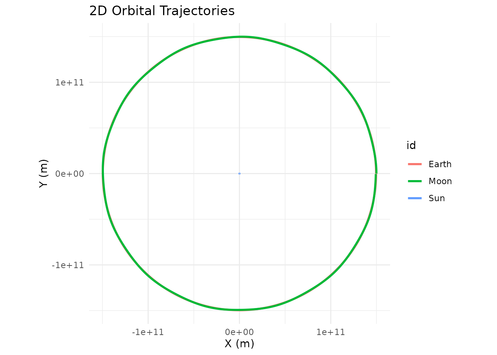
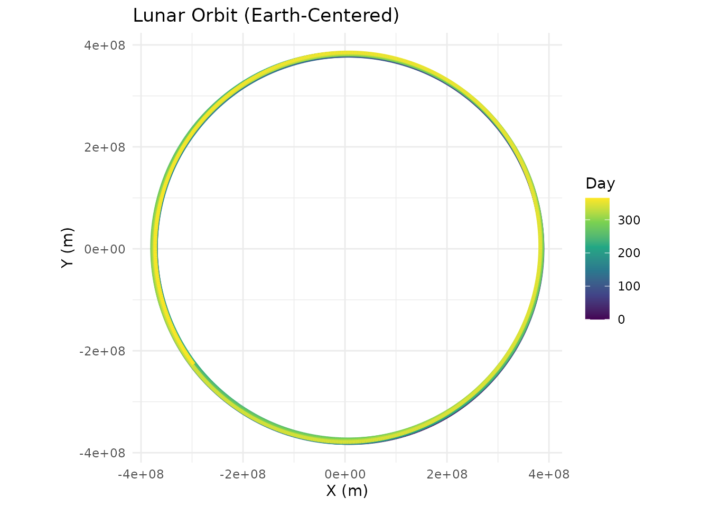
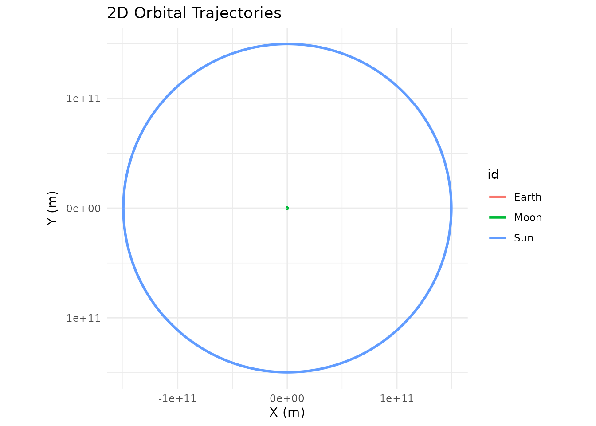
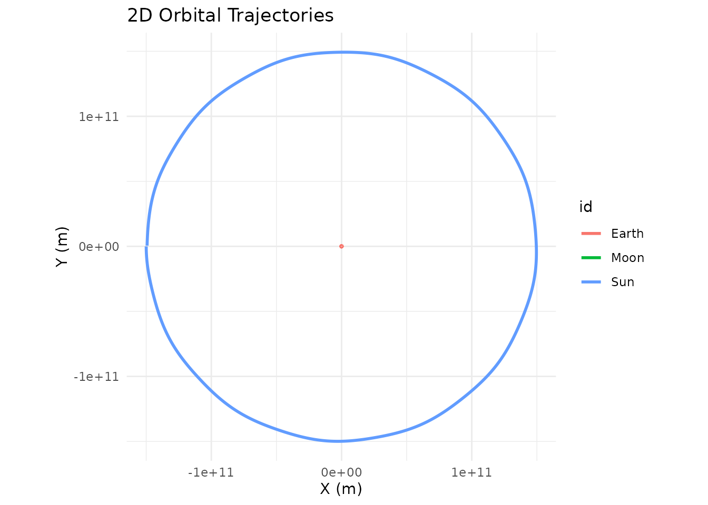
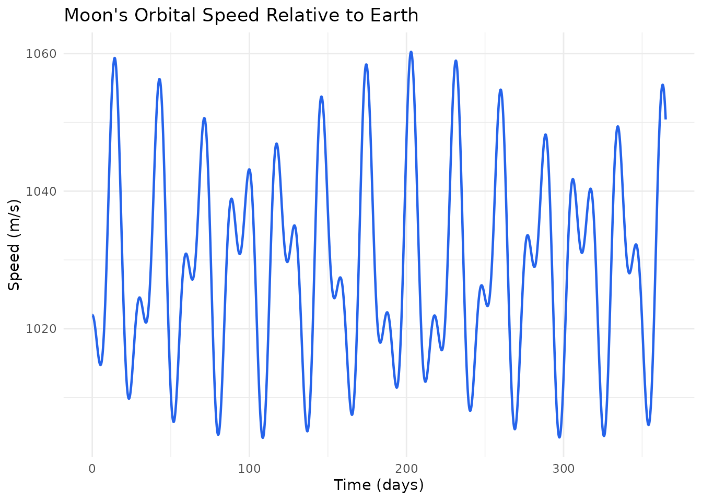
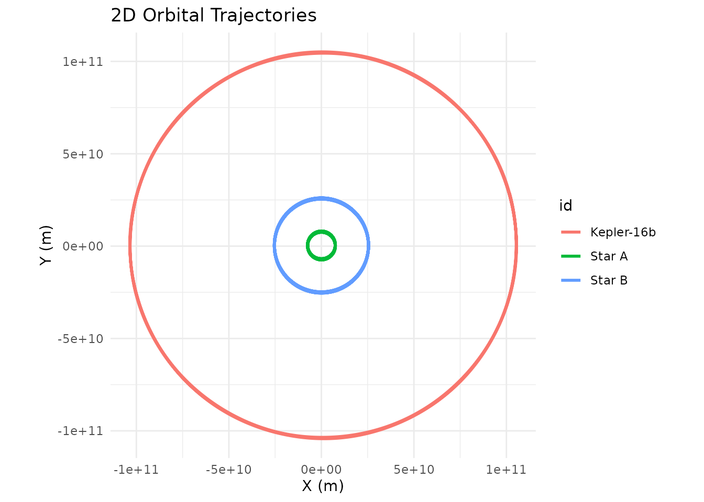
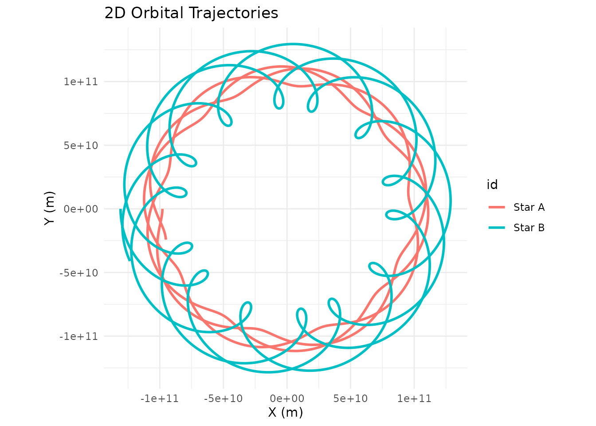
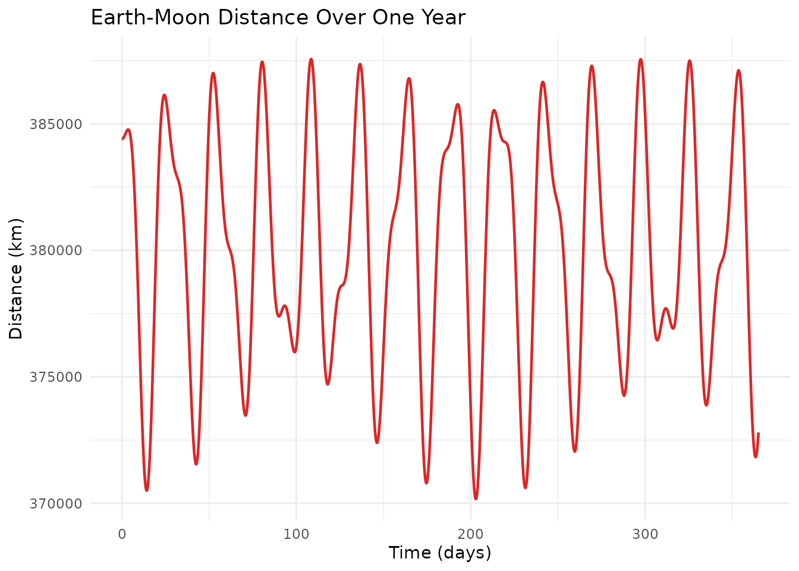

The Problem of Scale
Every N-body simulation has to pick an origin — some point that sits
at (0, 0, 0). By default, orbitr uses the coordinate system
you set up: whatever body you placed at the origin stays there (at least
initially), and everything else is measured relative to that point. This
is your reference frame.
The trouble is that the “natural” reference frame for building a simulation isn’t always the best one for understanding the results. Consider the Sun-Earth-Moon system. The obvious way to set it up is heliocentric (Sun at the origin):
sim <- create_system() |>
add_body("Sun", mass = mass_sun) |>
add_body("Earth", mass = mass_earth, x = distance_earth_sun, vy = speed_earth) |>
add_body("Moon", mass = mass_moon,
x = distance_earth_sun + distance_earth_moon,
vy = speed_earth + speed_moon) |>
simulate_system(time_step = 3600, duration = 86400 * 365)
sim |> plot_orbits()
At this scale the Earth-Moon distance (~384,000 km) is a rounding
error compared to the Earth-Sun distance (~150 million km). The Moon’s
trajectory overlaps Earth’s completely, and the Sun barely moves (its
tiny wobble around the barycenter is invisible at this zoom level), so
plot_orbits() only shows what looks like a single circular
track. The physics is fine; the perspective is wrong.
Shifting the Reference Frame
shift_reference_frame() fixes this by applying a
Galilean coordinate transformation. At every time step, it subtracts the
position and velocity of a chosen body from all other bodies:
The chosen body ends up fixed at the origin, and every other body’s trajectory shows its motion relative to that body. No physics changes — same forces, same accelerations — you’re just moving the camera.
sim |>
shift_reference_frame("Earth") |>
plot_orbits()
Now Earth sits at the center, the Moon traces its familiar near-circular orbit, and the Sun sweeps a wide arc in the background. This is the geocentric view — the same system, seen from a different place.
How It Works
The function signature is:
shift_reference_frame(sim_data, center_id, keep_center = TRUE)| Parameter | Type | Default | Description |
|---|---|---|---|
sim_data |
tibble |
— | Output from simulate_system()
|
center_id |
character |
— | ID of the body to place at (0, 0, 0) |
keep_center |
logical |
TRUE |
Keep the center body in the output? |
The transformation operates on all six phase-space coordinates
(x, y, z, vx,
vy, vz) simultaneously. At each time step, the
function captures the center body’s exact state and subtracts it from
every body in the system. The result is a tibble with the same structure
as the input — it slots right back into the pipe.
Keeping vs. Removing the Center Body
By default, keep_center = TRUE leaves the center body in
the output. Its coordinates will all be zero at every time step, so it
appears as a stationary dot at the origin. This is useful when you want
to see where the “camera” is.
Set keep_center = FALSE to drop the center body
entirely. This is the better choice when you’re feeding the shifted data
into a custom visualization or analysis pipeline and don’t need a point
stuck at zero:
library(ggplot2)
sim |>
shift_reference_frame("Earth", keep_center = FALSE) |>
dplyr::filter(id == "Moon") |>
ggplot(aes(x = x, y = y, color = time / 86400)) +
geom_path(linewidth = 1.2) +
scale_color_viridis_c(name = "Day") +
coord_equal() +
labs(title = "Lunar Orbit (Earth-Centered)", x = "X (m)", y = "Y (m)") +
theme_minimal()
Multiple Perspectives on the Same Data
Since shift_reference_frame() doesn’t modify the
underlying physics — it just translates coordinates — you can call it
multiple times on the same simulation to explore different viewpoints.
There’s no need to re-run simulate_system().
# Same simulation, three different perspectives
# 1. From the Sun (original frame, but explicit)
sim |>
shift_reference_frame("Sun") |>
plot_orbits()
# 2. From the Earth
sim |>
shift_reference_frame("Earth") |>
plot_orbits()
# 3. From the Moon
sim |>
shift_reference_frame("Moon") |>
plot_orbits()
The Moon-centered (selenocentric) view is particularly interesting: from the Moon’s perspective, the Earth appears to orbit it in a small circle, while the Sun sweeps a much larger arc. This is of course just a matter of perspective — the physics doesn’t care which body you call the center.
Analyzing Relative Velocities
The velocity transformation is just as useful as the position
transformation. After shifting to Earth’s frame, the velocity columns
(vx, vy, vz) give each body’s
velocity relative to Earth. You can use this to study how the
Moon’s orbital speed varies over time:
library(ggplot2)
sim |>
shift_reference_frame("Earth", keep_center = FALSE) |>
dplyr::filter(id == "Moon") |>
dplyr::mutate(speed = sqrt(vx^2 + vy^2 + vz^2)) |>
ggplot(aes(x = time / 86400, y = speed)) +
geom_line(color = "#2563eb", linewidth = 0.8) +
labs(title = "Moon's Orbital Speed Relative to Earth",
x = "Time (days)", y = "Speed (m/s)") +
theme_minimal()
The oscillation reflects the Moon’s slightly elliptical orbit — it speeds up at perigee (closest approach) and slows down at apogee (farthest point), exactly as Kepler’s second law predicts.
A Binary Star System from the Planet’s View
Reference frame shifts aren’t limited to the most massive body. You can center on any body in the system. Here’s Kepler-16b — a real circumbinary planet — looking back at its two parent stars:
G <- 6.6743e-11
AU <- distance_earth_sun
m_A <- 0.68 * mass_sun
m_B <- 0.20 * mass_sun
m_planet <- 0.333 * mass_jupiter
a_bin <- 0.22 * AU
r_A <- a_bin * m_B / (m_A + m_B)
r_B <- a_bin * m_A / (m_A + m_B)
v_A <- sqrt(G * m_B^2 / ((m_A + m_B) * a_bin))
v_B <- sqrt(G * m_A^2 / ((m_A + m_B) * a_bin))
r_planet <- 0.7048 * AU
v_planet <- sqrt(G * (m_A + m_B) / r_planet)
kepler16 <- create_system() |>
add_body("Star A", mass = m_A, x = r_A, vy = v_A) |>
add_body("Star B", mass = m_B, x = -r_B, vy = -v_B) |>
add_body("Kepler-16b", mass = m_planet, x = r_planet, vy = v_planet) |>
simulate_system(time_step = 3600, duration = 86400 * 228.8 * 3)From the default (barycentric) frame, you see the planet’s wide orbit and the stars’ tight inner dance:
kepler16 |> plot_orbits()
Now shift to the planet’s perspective:
kepler16 |>
shift_reference_frame("Kepler-16b", keep_center = FALSE) |>
plot_orbits()
From Kepler-16b, both stars trace looping spirograph-like patterns — a combination of the binary’s mutual orbit and the planet’s own revolution around the pair. This is what a double sunset looks like when you map it over time: two stars that dance around each other while slowly circling the sky.
Practical Tips
Don’t re-simulate.
shift_reference_frame() is a pure coordinate transformation
on the output tibble. It’s fast and doesn’t require re-running the
physics. Store the simulation result once and shift it as many times as
you need.
Use keep_center = FALSE for custom
plots. When piping into ggplot2 or
plotly, the center body sitting at (0, 0) with zero
velocity can clutter your visualization or skew axis ranges. Dropping it
keeps your plots clean.
Chain with dplyr. The output is a
standard tibble, so you can filter, mutate, and summarize after
shifting. For instance, compute the distance between two bodies over
time, or track how relative velocity evolves:
# Distance between Earth and Moon over time
sim |>
shift_reference_frame("Earth", keep_center = FALSE) |>
dplyr::filter(id == "Moon") |>
dplyr::mutate(distance_km = sqrt(x^2 + y^2 + z^2) / 1000) |>
ggplot(aes(x = time / 86400, y = distance_km)) +
geom_line(color = "#dc2626", linewidth = 0.8) +
labs(title = "Earth-Moon Distance Over One Year",
x = "Time (days)", y = "Distance (km)") +
theme_minimal()
The frame doesn’t affect the physics. Shifting the reference frame is a post-processing step. The gravitational forces, accelerations, and numerical integration all happened in the original coordinate system. You’re just choosing where to stand when you look at the results.